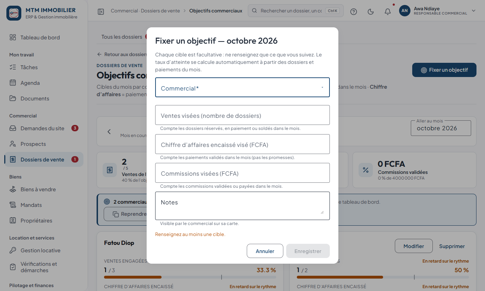

Ce guide en deux minutes
Ce guide est le vôtre : il traite de ce qu’un responsable commercial (ou un manager) fait dans le back-office. Vous voyez ce que voient vos commerciaux, et toute l’équipe : ce guide commence donc par vos outils de pilotage, puis rappelle les gestes de vos commerciaux pour mieux les accompagner.
À la fin de la lecture, vous saurez :
- lire le tableau de bord Équipe et repérer en quelques secondes qui a besoin d’aide ;
- fixer et suivre les objectifs mensuels ;
- débloquer les dossiers bloqués et répartir prospects et biens ;
- valider les paiements et les commissions de vos commerciaux ;
- tenir une routine hebdomadaire qui tient en une heure.
À retenir — Pour le détail des gestes quotidiens d’un commercial (créer un prospect, ouvrir un dossier…), consultez le Guide du commercial : vous pouvez le donner à chaque nouvelle recrue.
Se connecter et protéger son compte
- Saisissez votre e-mail et votre mot de passe, puis Se connecter.
- À la première connexion, choisissez un nouveau mot de passe (12 caractères minimum : majuscule, minuscule, chiffre, caractère spécial).
- Mot de passe oublié ? Le lien sous le formulaire vous envoie un e-mail. Après plusieurs erreurs, le compte se bloque quelques minutes.
Votre rôle ne demande pas la double authentification, mais elle reste recommandée : votre nom › Sécurité et mot de passe.
Découvrir l’écran

| Zone | À quoi elle sert |
|---|---|
| Menu à gauche | Un sujet = une ligne ; les pages du sujet sont les onglets en haut de l’écran. |
| Barre de recherche | Un prospect, un bien, un dossier, ou une page : Ctrl + K. |
| Cloche | Vos alertes. Un point rouge signale du nouveau. |
| Point d’interrogation | Ouvre ce guide. |
| Votre nom | Notifications, sécurité, déconnexion. |
Les menus que vous utilisez
| Rubrique | Ce que vous y faites |
|---|---|
| Tableau de bord | L’onglet Équipe, puis Mon activité si vous suivez vous-même des prospects. |
| Mon travail | Tâches et Agenda : les vôtres et ceux de l’équipe. |
| Commercial | Demandes du site, Prospects (tous), Dossiers de vente (tous, avec les onglets Mes commissions et Objectifs commerciaux). |
| Biens | Biens à vendre, Mandats, Propriétaires. |
| Pilotage et finances | Rapports. |
Les pastilles rouges du menu comptent ce qui vous attend : paiements à valider, demandes du site non lues, tâches en retard. Rouge = à traiter maintenant, orange = à surveiller, vert = tout va bien.
Le tableau de bord « Équipe »
À la connexion, vous arrivez sur Équipe.

Deux rangées de réglages en haut : les onglets de vue (Équipe, Mon activité, Vue générale) disent qui vous regardez ; le sélecteur de période (Ce mois-ci, Mois précédent) dit quand.
Les quatre cartes de chiffres :
| Carte | Ce qu’elle dit |
|---|---|
| Ventes soldées | Les ventes conclues sur la période, avec leur montant. |
| Objectif de ventes | Le taux d’atteinte de l’équipe (« 1 sur 4 · 1 commercial avec objectif »). |
| Relances en retard | Les relances et les tâches en retard dans l’équipe. |
| Dossiers bloqués | Les dossiers qui n’ont plus bougé depuis trop longtemps. |
Le tableau « Équipe commerciale » donne, pour chaque personne : prospects actifs, relances en retard, visites, ventes, chiffre d’affaires, commissions estimées, tâches en retard, atteinte de l’objectif. Les zéros sont grisés : un chiffre qui ressort a une raison, et un retard est en rouge. Une ligne Total de l’équipe ferme le tableau.
À retenir — Cliquez sur une ligne : vous ouvrez le tableau de cette personne, tel qu’elle le voit. C’est le meilleur moyen de l’aider ou de comprendre un chiffre.
Les ventes comptées ici sont celles soldées sur la période. L’objectif, lui, compte les dossiers engagés (réservés, en paiement ou soldés) du mois. Les deux se lisent avec leur libellé.
Les dossiers bloqués
Un dossier encore ouvert dont plus rien ne bouge depuis un délai. Un « mouvement » est une modification, mais aussi un paiement, une étape, une relance : ce qui avance par ses pièces n’est pas signalé comme bloqué.
| Dossier | Bloqué quand… | Délai par défaut |
|---|---|---|
| Vente | ni modification, ni paiement, ni réservation, ni document | 15 jours |
| Mission | ni modification, ni étape, ni règlement | 10 jours |
| Chantier en cours | aucune journée saisie ni modification | 7 jours |
| Prospect actif | aucune activité ni visite, ni modification | 14 jours |
| Tâche | échéance dépassée de plus de… | 3 jours |
Chaque dossier bloqué de la liste est cliquable. Les délais se règlent dans Administration › Réglages › Alertes et rapports automatiques (réservé à la direction et aux administrateurs) : demandez-leur de les ajuster si ces seuils ne vous conviennent pas.
Les objectifs
Commercial › Dossiers de vente, onglet Objectifs commerciaux : les cibles du mois par commercial et leur taux d’atteinte.

- Naviguez de mois en mois avec les flèches.
- Fixer un objectif : choisissez le commercial, puis la cible de ventes, de chiffre d’affaires et de commissions pour le mois.
- Le bandeau bleu signale les commerciaux sans objectif. Reprendre les cibles du mois précédent les recopie en un clic.

Chaque carte montre l’avancement avec un repère de rythme : « en retard sur le rythme » compare à la part du mois déjà écoulée.
Définitions : ventes = dossiers réservés, en paiement ou soldés dans le mois ; chiffre d’affaires = paiements validés ; commissions = validées ou payées. Un commercial sans cible n’a ni taux d’atteinte ni suivi sur son tableau de bord : fixez-en une à chacun.
Les prospects de toute l’équipe
Là où un commercial ne voit que les siens, vous voyez tous les prospects (Commercial › Prospects).

- La liste s’affiche en Cartes ou en Tableau (bouton en haut à droite).
- Le filtre Commercial isole les prospects d’une personne.
- Le bloc Performance par commercial (à déplier) donne ventes conclues, taux de conversion et chiffre d’affaires.
- Exporter produit un fichier de la liste ; un motif est demandé et conservé dans l’historique.
Affecter un prospect à un commercial
- Ouvrez la fiche du prospect.
- Cliquez sur la flèche ⌄ à droite de Modifier, puis Affecter un commercial.
- Choisissez la personne et validez.
Utile quand un prospect arrive du site sans responsable, ou pour répartir la charge.
Affecter un bien
Un commercial ne voit que les biens dont il est responsable. Pour qu’il puisse en présenter un, ouvrez la fiche du bien, Modifier, puis choisissez le commercial responsable (étape 1 du formulaire, bloc Propriétaire).
Astuce — Pour proposer un bien à un client, un commercial n’a pas besoin d’en être responsable : Proposer un terrain et Ouvrir un dossier montrent tous les biens disponibles. L’affectation sert à qui suit le bien.
Les demandes du site
Commercial › Demandes du site : les messages envoyés depuis le formulaire de contact du site. Une pastille rouge compte les demandes non lues.

| Action | Ce qu’elle fait |
|---|---|
| Répondre | Envoie la réponse par e-mail et la fait apparaître dans l’espace client. |
| Créer le prospect | Crée la fiche et permet à un commercial de rappeler la personne. |
| Ouvrir le prospect | Ouvre la fiche si le contact est déjà connu. |
À retenir — Répondez dans la journée et créez le prospect : c’est la source de beaucoup de ventes. Affectez ensuite le prospect à un commercial.
Les ventes de l’équipe
Commercial › Dossiers de vente montre tous les dossiers.

Dans un dossier, vous pouvez :
- Valider ou refuser un paiement enregistré par un commercial : boutons Valider et Refuser sur la ligne du paiement. Le refus demande un motif, conservé sur le paiement.
- Gérer la commission : elle est estimée par le responsable, validée par le manager (jamais par son auteur), puis payée par la comptabilité une fois le dossier soldé.
- Changer le statut du dossier, jusqu’à Soldé.
Les statuts d’un dossier
| Statut | Signification |
|---|---|
| En cours | Dossier ouvert, rien n’est engagé. |
| Pré-réservé | Intention ferme, acompte non versé : le bien reste visible sur le site. |
| Réservé | Acompte versé : le bien est bloqué et retiré du site. |
| Paiement partiel | Une partie du prix est encaissée ; le solde reste dû. |
| Soldé | Prix intégralement payé : la vente est conclue. |
| Annulé | Dossier abandonné ; le bien redevient disponible. |
Important — On ne valide pas ses propres paiements ni ses propres commissions. C’est la règle des deux regards : l’application l’impose. Si vous avez vous-même enregistré un paiement, une autre personne habilitée doit le valider.
Attention — Ne laissez pas annuler un dossier déjà payé sans en parler : l’application demande ce que deviennent les paiements (acompte conservé ou remboursé).
Les tâches et l’agenda de l’équipe
Avec le droit d’administrer les tâches et l’agenda, vous voyez et réassignez les tâches de toute l’équipe, et vous consultez l’agenda de l’équipe.
- Mon travail › Tâches, onglet Toute l’équipe : toutes les tâches, avec leur échéance (rouge = dépassée, orange = aujourd’hui). Les trois compteurs du haut sont des filtres.
- Pour répartir la charge après une absence, ouvrez une tâche et changez son responsable : la personne est prévenue.
- Mon travail › Agenda : basculez de mon agenda à l’équipe pour voir les visites et rendez-vous de chacun.
Mandats, propriétaires et biens
- Biens › Propriétaires : créez le propriétaire avant le bien ou le mandat.
- Biens › Mandats : un mandat peut être créé, modifié et validé par vous. Joignez le contrat signé. Un mandat qui approche de sa fin vous prévient (30 jours avant par défaut) : renouvelez ou clôturez à temps, un bien sans mandat valide ne doit pas être proposé.
- Biens › Biens à vendre : créez, modifiez, publiez (statut Disponible) et exportez. Surveillez la carte Fiches à compléter : sans photo ou sans position GPS, un bien se vend moins bien.
Ce que les commerciaux font : de quoi les accompagner
| Ce que fait le commercial | Ce que vous vérifiez |
|---|---|
| Crée ses prospects | Chaque prospect a un nom, un moyen de contact et une prochaine action. |
| Relance | Pas de relance en retard (colonne Relances en retard de votre tableau). |
| Organise des visites | Les retours de visite sont saisis (objection principale, prix accepté ou non). |
| Ouvre des dossiers | Le prix de vente prévisionnel est cohérent avec le prix public. |
| Enregistre des paiements | Ils sont à valider : vous les contrôlez le jour même. |
Les règles que vous devez faire respecter :
- Toujours une prochaine action sur un prospect actif.
- Noter le retour après chaque visite.
- Un paiement enregistré est « à valider » : il ne compte qu’après contrôle.
Ce que je peux faire, et ce que je ne vois pas
| Module | Vos droits |
|---|---|
| Prospects | Tous, créer, modifier, exporter, supprimer, avec l’identité complète. |
| Biens | Tous : créer, modifier, valider, publier, exporter. |
| Mandats | Consulter, créer, modifier, valider. |
| Propriétaires | Consulter, créer, modifier, supprimer. |
| Dossiers de vente | Tous : créer, modifier, valider, publier, exporter, chiffres financiers, administrer. |
| Demandes du site | Voir et traiter. |
| Rapports | Consulter. |
| Tâches, agenda | Tous, y compris ceux de l’équipe. |
Vous ne voyez pas les finances de MTM (comptabilité, trésorerie), la gestion des utilisateurs, les rôles ni les paramètres. Si un menu manque, c’est que votre rôle ne le prévoit pas : demandez à un administrateur.
Une routine hebdomadaire
- Lundi : ouvrez Équipe, regardez les relances en retard et les dossiers bloqués. Appelez les personnes concernées.
- Chaque jour : validez les paiements et les commissions en attente (pastille rouge sur Dossiers de vente).
- Mercredi : passez en revue les Demandes du site non affectées.
- Vendredi : regardez le pipeline : combien de prospects en négociation ? en réservation ? Qui a besoin d’un coup de main ?
- Fin de mois : vérifiez les objectifs atteints, puis fixez ceux du mois suivant (Reprendre les cibles du mois précédent fait l’essentiel).
Questions fréquentes
Un commercial dit qu’il ne voit pas un prospect. Il ne voit que les siens. Affectez-le-lui depuis la fiche (⌄ › Affecter un commercial).
Je ne peux pas valider un paiement. Vous ne pouvez pas valider un paiement que vous avez saisi vous-même. Demandez à la comptabilité, à un autre responsable ou à la direction.
Un commercial n’a ni taux d’atteinte ni objectif sur son tableau. Aucun objectif n’est fixé pour lui ce mois-ci : Commercial › Dossiers de vente › Objectifs commerciaux, Fixer un objectif.
Un dossier est signalé « bloqué » à tort. Un dossier est bloqué quand rien n’a bougé pendant le délai prévu. Ajoutez une note, une relance ou une étape : cela compte comme un mouvement. Si le délai vous semble trop court, demandez à un administrateur de le modifier.
Je veux exporter une liste. Exporter demande un motif (par exemple « reporting mensuel ») : il est conservé dans l’historique des actions.
Une réservation a expiré. Le bien a été libéré. Si le client est toujours d’accord, vérifiez que le bien est encore disponible, puis refaites Réserver le bien depuis le dossier.
Aide-mémoire
Chaque jour
- Valider les paiements et commissions en attente.
- Regarder Relances en retard et Dossiers bloqués.
Chaque semaine
- Lundi : revue d’équipe. Vendredi : pipeline.
Chaque mois
- Fixer les objectifs du mois suivant.
Où cliquer
| Je veux… | J’ouvre… |
|---|---|
| Voir mon équipe | Tableau de bord › Équipe |
| Aider un commercial | Équipe › un clic sur son nom |
| Fixer un objectif | Dossiers de vente › onglet Objectifs commerciaux |
| Affecter un prospect | La fiche › ⌄ › Affecter un commercial |
| Valider un paiement | Dossiers de vente › le dossier › Valider |
| Répartir des tâches | Tâches › onglet Toute l’équipe |
| Trouver n’importe quoi | Ctrl + K |